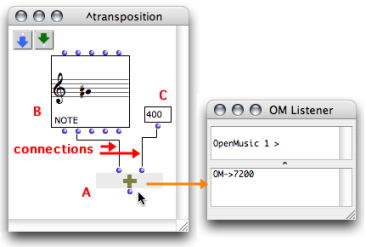

OpenMusic DocumentationHiérarchie de section : OM 6.6 User Manual > Visual Programming I > Patch Introduction
OpenMusic DocumentationHiérarchie de section : OM 6.6 User Manual > Visual Programming I > Patch Introduction
Navigation : page précédente | page suivante
Attention, votre navigateur ne supporte pas le javascript ou celui-ci à été désactivé. Certaines fonctionnalités de ce guide sont restreintes.
Introduction to Patch Programming
Almost all programming in OpenMusic is done in patches, which are visual representations of programs.
Location
Content
Patches contain boxes, which represent :
- functions that are called or used by the program,
- objects – such as notes, sound files and so on –, that are created and processed in the program.
Connections link these components together to define the functional structure of the program.
Boxes and Programs
The various box types that might interact in a program generally have different properties. Each box type is described in the Boxes and Patch Components section. You will also learn how to create patches within other patches. This very convenient procedure is called functional abstraction. The user will resort to it as soon as he or she gets familiar with OM.
A Simple Patch Example : Performing a Transposition
This patch contains three items :
- A : the **** om+ function **** , which executes additions
- B : a note object
- C : a data box .
The note is a G#4, which means its pitch is equal to 6800 midicents[2]. This pitch can be accessed via the second inlet and outlet of the box.

The first input of om+ is connected to the second outlet of the note : the pitch of the note is the first term of the addition.
The data box represents a value : 400. It is connected to the second inlet of om+. It is the second term of the addition.
When om+ is evaluated, the Listener displays the value of the resulting pitch in midicents.
Références :
Workspace
OpenMusic's working environment. Each session starts with choosing a workspace, the equivalent of a desktop where programs are created and organized, and where items can be stored.
Midicent
A midicent is a unit representing one cent of the usual MIDI pitch unit, that is, a half-tone. For instance, a C4 corresponds to 60 in MIDI, and to 6000 midicents, C4# to 61, i.e. 6100 midicents, and so on.
Plan :
Navigation : page précédente | page suivante
A propos...(c) Ircam - Centre Pompidou